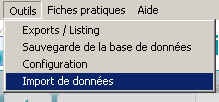
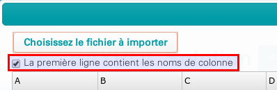
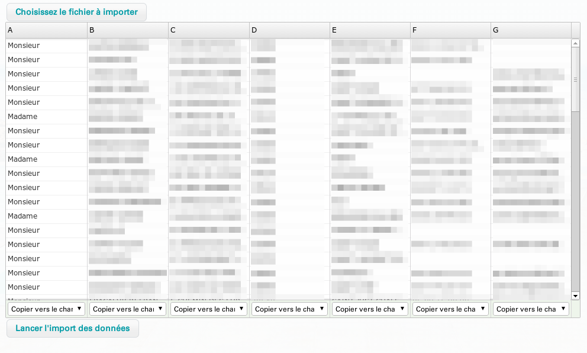
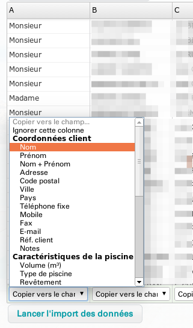
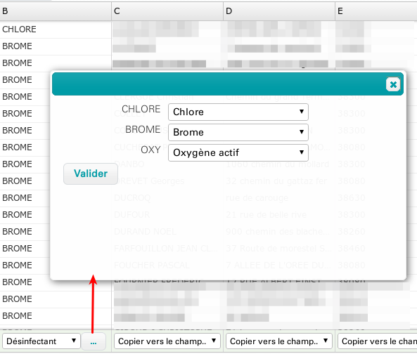
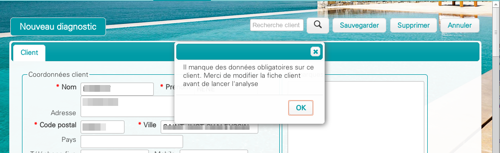
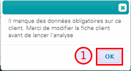

Note : Il est fortement conseillé de faire une Sauvegarde de la base de données avant de faire une opération d'import des données
L'import de données est accessible à partir du menu principal Outils > Import de données.

S'affiche alors une fenêtre invitant à indiquer à l'application l'emplacement du fichier à importer; cliquer sur le bouton Choisissez le fichier à importer
Après avoir indiqué le fichier de données, l'application va automatiquement afficher les données du fichier sous forme d'un tableau
Si votre fichier contient des nom de colonnes sur la première ligne, cocher la case "La première ligne contient les noms de colonne" pour ne pas importer cette ligne dans les données
 Pour chaque colonne, il faut indiquer dans quel champ il faut importer cette donnée via la liste de choix affichée en bas
Si la colonne doit être ignorée lors de l'import des données, il faut choisir l'option "Ignorer cette colonne"
Dans le cas où le champ de destination suit une codification, le logiciel va demander de choisir la correspondance entre les valeurs du fichier et les valeurs utilisées dans le logiciel
Une fois les réglages terminés, lancer l'import avec le bouton "Lancer l'import des données"
Le fichier ne contenant pas systématiquement toutes les données obligatoires pour la création d'un diagnostic, l'utilisateur devra compléter les données obligatoire si nécessaire lors de la première utilisation de la fiche client
Après l'import des données, à partir de l'onglet Diagnostic, si les informations obligatoires « Volume » et/ou « Filtre » et/ou « Désinfectant » ne sont pas renseignés (1), il faudra ouvrir la fiche client (2), enregistrer les données obligatoires Volume/Filtre/ désinfectant (3) puis « sauvegarder » (4) avant de pouvoir lancer un diagnostic « Nouveau Diagnostic » (5) :
